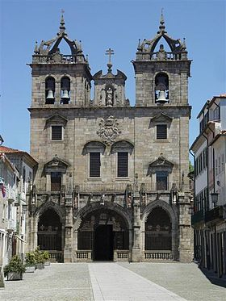

Braga é uma cidade portuguesa situada ao Norte de Portugal com 110 640 habitantes (2011)[1] . É sede dum município com 183,4 km² de área, uma população de 181 494 habitantes (2011)[1] e 137 000 habitantes no seu perímetro urbano (2012), sendo o centro da antiga região denominada Minho, com mais de um milhão de habitantes. Em 2012 foi distinguida como Capital Europeia da Juventude, concedido pelo Fórum Europeu da Juventude, tendo desenvolvido várias iniciativas de âmbito cultural, social, político e económico destinadas aos jovens. Braga possui uma história bi-milenar que se iniciou na Roma Antiga, quando foi fundada em 16 a.C. como Bracara Augusta em homenagem ao imperador romano Augusto (r. 27 a.C.–14 d.C.)
O clima em Braga, pelo facto de se situar entre serras e o Oceano Atlântico, é tipicamente atlântico temperado[9], ou seja, com quatro estações bem definidas. Os Invernos são amenos e pluviosos , e geralmente com ventos moderados de Sudoeste. O vento pode também soprar do Norte, normalmente forte, o que geralmente provoca uma grande descida da temperatura, estes ventos são designados como Nortadas. Em anos frios ocorre a queda de neve, havendo temperaturas mínimas médias de -3 °C. O último nevão na cidade foi em 9 de Janeiro de 2009. As Primaveras são tipicamente amenas, com grandes aberturas e ventos suaves. As brisas matinais ocorrem com maior frequência, principalmente nas maiores altitudes. No vale do Cávado, a baixa altitude, é normal existirem os nevoeiros matinais. De salientar o mês de Maio que é bastante propício às trovoadas, devido ao aquecimento do ar húmido com a chegada do Verão. Os verões são quentes e soalheiros com ventos suaves d'Este. Nos dias mais frescos, podem ocorrer espontaneamente chuvas de curta duração, estas chuvas são bastante importantes para a vegetação da região, pois reabastece os lençóis de água o que torna a região rica em vegetação durante o ano inteiro, pela qual é conhecida por Verde Minho. Os Outonos são amenos e pluviosos, geralmente com ventos moderados. As maior e menor temperaturas registadas em Braga no período 1971-2000 foram 39,4 °C e -4,1 °C. Porém, há registos de -6.3 °C em 2001 e 41.3 °C em 1943 (fonte: Instituto de Meteorologia). Enquanto a temperatura desce, aumenta a pluviosidade. Existe uma maior frequência de nevoeiros, principalmente no vale do Cávado onde ocorrem os nevoeiros matinais mais densos.
